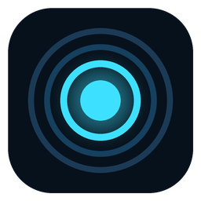

KAIROKAIRO is a voice assistant for Windows, macOS and Linux. Say “Kairo”, ask for what you want, and it answers out loud: it opens apps, controls music and volume, sets reminders, remembers what matters to you and tracks your homework.
Live demo
A real room has TV, friends and phone calls. KAIRO only answers when you address it, keeps listening for follow-ups for 20 seconds, and ignores people who are just talking about it. Try it below: type, click an example, or press TALK to use your microphone.
This page runs KAIRO's real “was that meant for me?” rules in your browser. The replies are scripted examples; the actual app answers with the AI you choose and runs the tool shown.
What it does
Say “Kairo” once, then keep talking. Interrupt it any time with “stop” or a new request. Speech meant for someone else is ignored.
Open apps and websites, play YouTube, set volume, control media, weather, reminders and timers, notes, screenshots, system status, lock or sleep the PC.
Tell it what matters (“remember my exam is on Friday”) and it remembers next week, with local semantic search.
Homework, tests and to-dos with due dates, subjects and priorities. Ask “what's overdue?” any time.
Claude, OpenAI, Gemini, OpenRouter, Groq, Mistral, DeepSeek, xAI, any OpenAI-compatible API, or a free local model with Ollama.
API keys live in the system's password store, never in a file. With Ollama, nothing leaves your computer, and it falls back to local if the internet drops.
How it works
The microphone is open only while KAIRO is listening; MUTE closes it completely.
Speech becomes text. Mis-hearings like “Cairo” still count as the wake word.
Was it meant for KAIRO? Direct, maybe, or ignore, using the rules in the demo above.
The AI picks a tool (open an app, set a reminder…) and KAIRO runs it on your computer.
A natural neural voice answers. Say “stop” and it goes quiet in under 0.1 s.
Download
Windows 10 (2004+) or 11, 64-bit. Signed MSIX package with automatic updates from GitHub.
0.10.0 beta 1 0.9.1 stable64-bit x86. A .deb for Ubuntu and Debian, or a .tar.gz that installs without admin rights.
Get the .deb / .tar.gz